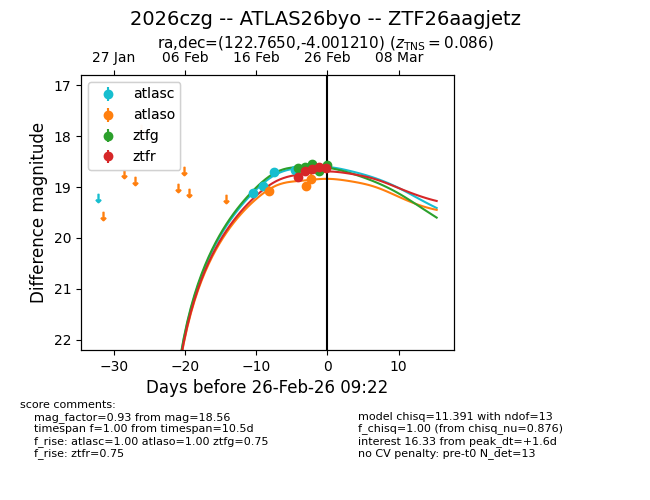
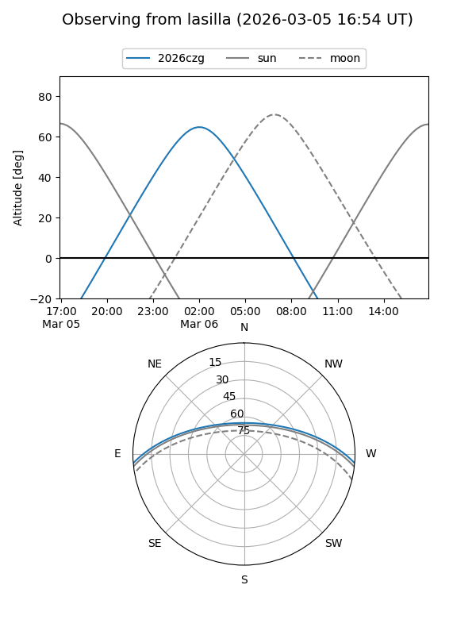
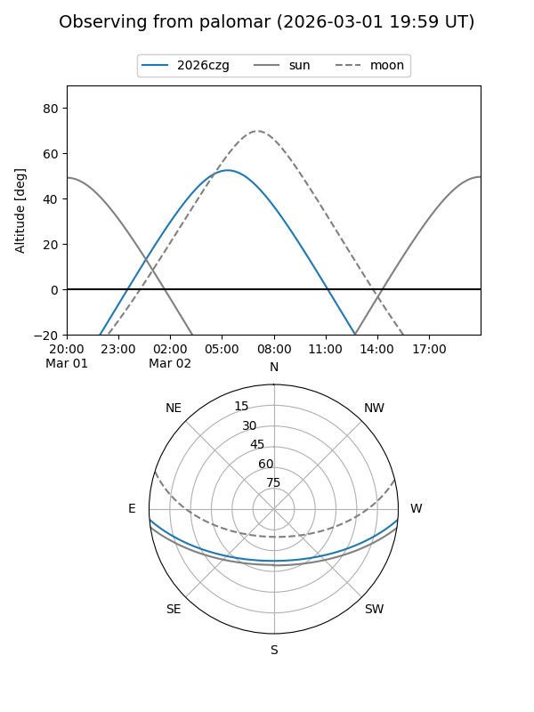
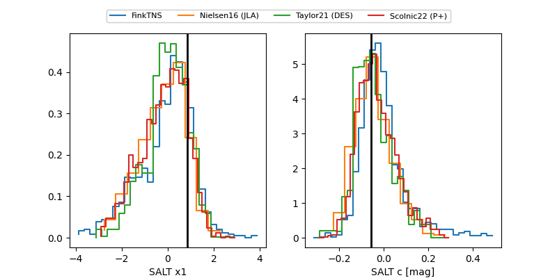

2026czg
Target 2026czg at 2026-02-26 09:23
Aliases and brokers:
FINK: link
Lasair: link
ALeRCE: link
TNS: link
YSE: link
alt names
ZTF26aagjetz (ztf,fink_ztf)
2026czg (tns,yse)
ATLAS26byo (atlas)
Coordinates:
equatorial (ra, dec) = 122.7650,-4.00121
equatorial (HMS+DMS) = 08:11:03.59,-04:00:04.36
galactic (l, b) = (225.9566,+15.69152)
Flags:
confirmed ia
Photometry:
last atlasc=18.66, atlaso=18.84, ztfg=18.56, ztfr=18.63
4 atlasc, 3 atlaso, 5 ztfg, 5 ztfr detections
Lightcurve

Visibility


Additional plots
